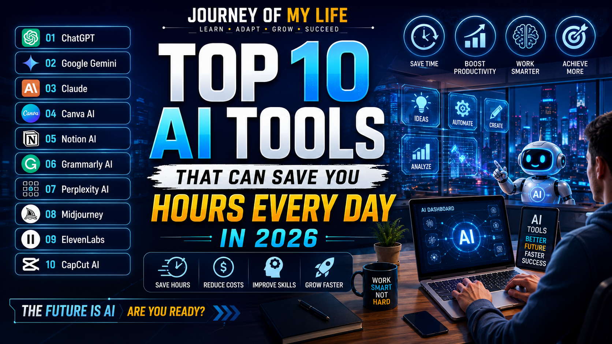

Work Smarter, Learn Faster, Grow Bigger
Artificial Intelligence is transforming the way people work, learn, create content, and manage daily tasks. In 2026, AI tools are helping students, bloggers, freelancers, YouTubers, and business owners save countless hours every week.
Instead of spending hours on repetitive tasks, modern AI tools can write content, generate images, edit videos, answer questions, organize projects, and automate workflows within seconds.
In this article, we will explore the top AI tools that can dramatically increase productivity and help you work smarter.
ChatGPT is one of the most powerful AI assistants available today. It helps users write content, generate ideas, solve problems, learn skills, and improve productivity.
Google Gemini combines AI with Google's powerful search ecosystem, making research and information gathering easier.
Claude is excellent for handling long documents and generating detailed responses.
Canva AI helps users create thumbnails, banners, presentations, and social media posts quickly.
Notion AI helps organize notes, manage projects, and automate productivity tasks.
Grammarly helps improve grammar, spelling, tone, and clarity in writing.
Perplexity provides AI-powered answers with references, making it useful for research and learning.
Midjourney creates stunning AI-generated artwork and professional images.
ElevenLabs generates realistic AI voices for videos, podcasts, and content creation.
CapCut AI simplifies video editing with automatic captions, effects, and AI-powered editing features.
| Tool | Best Use |
|---|---|
| ChatGPT | Writing & Productivity |
| Gemini | Research |
| Claude | Long Documents |
| Canva AI | Design |
| Notion AI | Organization |
| Grammarly | Writing Improvement |
| Perplexity | Research |
| Midjourney | Images |
| ElevenLabs | Voice Generation |
| CapCut AI | Video Editing |
AI tools are creating new earning opportunities through blogging, freelancing, content creation, affiliate marketing, digital marketing, and online businesses.
People who learn AI tools today can gain a competitive advantage in the future digital economy.
Many AI tools offer free plans with optional premium upgrades.
AI can assist creativity, but human imagination and decision-making remain valuable.
ChatGPT is often considered one of the easiest AI tools for beginners.
Artificial Intelligence is changing how people work and create. The right AI tools can save hours of time every week and help individuals become more productive.
The future belongs to people who learn how to use technology effectively. Start exploring AI tools today and prepare yourself for the opportunities of tomorrow.